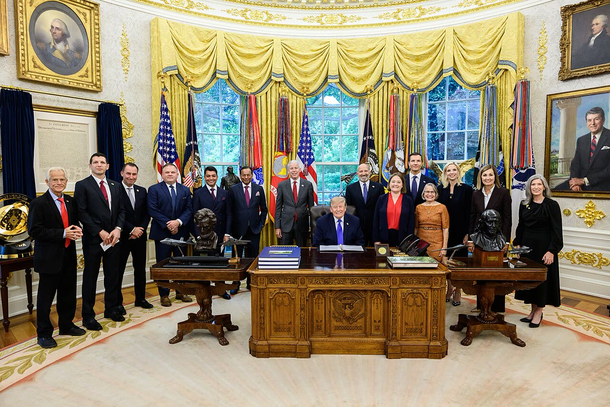

Trump pensa di non riprendere i raid sull'Iran (fonti anonime, Reuters)
A nostro avviso conta più la condizione della pausa: se non si sa cosa sia una «provocazione», a decidere è chi lancia il primo drone.
Redazione Contrappunto · aggiornato il 14.11.2026

.jpg){kind=link}
Dal 28 febbraio 2026 gli Stati Uniti e Israele sono in guerra con l'Iran: da allora lo Stretto di Hormuz, da cui passa gran parte del petrolio e del gas del Golfo, è conteso, e Washington tiene un blocco navale sui porti iraniani. Sabato 14 novembre l'agenzia Reuters ha scritto che il presidente Donald Trump, in riunioni con i suoi consiglieri, ha detto che potrebbe non riprendere gli attacchi. Lo scrive citando tre persone anonime. Lo stesso giorno i Guardiani della Rivoluzione, l'esercito ideologico della Repubblica islamica, hanno detto di aver abbattuto un altro drone americano sull'isola di Qeshm. Venerdì avevano rivendicato un attacco al Bahrein (nostro pezzo del 13 novembre).
Vedi di più: 5 parole spiegate, cosa si racconta
Cosa si raccontaDue notizie senza prove pubbliche: una viene da fonti anonime, l'altra da una parte in guerra. La prima: Trump valuta una pausa, e lo dicono fonti anonime, non il presidente; di pubblico c'è solo una sua frase di giovedì a un conduttore sportivo e la nota di un funzionario della Casa Bianca, che non conferma né smentisce (Reuters, in Jerusalem Post e The Hindu). La seconda: l'IRGC dice di aver intercettato un drone MQ-1 su Qeshm (TASS, Anadolu); l'ora, le 14:30 locali, la dà solo TASS. Nelle fonti lette gli Stati Uniti non commentano. [The Jerusalem Post] [The Hindu] [TASS] [Anadolu Agency]
- Fonti anonime
- Reuters scrive di «tre persone informate» che non vogliono essere nominate; non possiamo verificare chi siano né se riferiscano bene. Di pubblico c'è solo ciò che dicono Trump e la Casa Bianca.
- IRGC
- Corpo dei Guardiani della Rivoluzione islamica, forza armata parallela all'esercito regolare iraniano, con aeronautica e difesa aerea proprie; è l'autore della rivendicazione sul drone.
- Qeshm
- La più grande isola iraniana, nello Stretto di Hormuz, vicino alla costa: c'è una presenza militare iraniana, ed è già stata bersaglio di un raid americano il 2-3 novembre (nostro pezzo del 3 novembre).
- MQ-1
- Drone americano senza pilota di sorveglianza e attacco, armato di missili; secondo l'IRGC ne ha abbattuti 17.
- Houthi
- Movimento armato yemenita sostenuto dall'Iran: Reuters cita anche loro tra le possibili «provocazioni».
- Secondo tre fonti anonime di Reuters, Trump ha detto ai consiglieri che potrebbe non attaccare l'Iran se non ci saranno nuove provocazioni di Teheran o degli Houthi; non ha deciso (Jerusalem Post, The Hindu).
- Riad e Ankara gli hanno chiesto di non riprendere gli attacchi; funzionari israeliani continuano a chiedere una nuova campagna, secondo un funzionario Usa (Jerusalem Post, The Hindu).
- L'IRGC dice di aver abbattuto su Qeshm il «17°» drone americano; la cifra la dà solo il comunicato dell'IRGC, riportato da TASS (Anadolu, TASS).
Reuters, con tre persone informate che restano anonime, scrive che Trump ha detto ai consiglieri che potrebbe non attaccare l'Iran se Teheran o gli Houthi non lo provocano di nuovo; Jerusalem Post e The Hindu riprendono il dispaccio. Lo stesso dispaccio dice che non ha deciso, e un funzionario della Casa Bianca risponde che sa cosa farà, e quando, solo Trump. Intanto la Guardia rivoluzionaria dice di aver abbattuto su Qeshm il «17°» drone americano (TASS, Anadolu): conferme americane non ne abbiamo lette. A nostro avviso la pausa è una frase riferita, non un impegno, e vale fino alla prossima provocazione. [1] [2] [3] [4]
La verifica punto per punto5 passaggi, 5 fonti
Qui sotto ogni cosa scritta sopra, una per una, con le fonti. Confermato: lo dice un documento originale o più fonti lette. Plausibile: lo riportano fonti serie, ma non abbiamo letto l'originale. Discordante: le fonti danno numeri diversi, e diciamo quali. Ipotesi e Opinione sono il nostro ragionamento, separato dai fatti.
Cosa riferisce Reuters
Reuters (14 novembre, ripresa da Jerusalem Post e The Hindu) scrive che Trump ha detto in questi giorni ai consiglieri per la sicurezza nazionale che potrebbe non attaccare l'Iran se gli Stati Uniti non subiranno nuove provocazioni da Teheran o dagli Houthi; lo dicono tre persone informate, anonime. Reuters scrive anche che Trump alterna minacce di nuovi raid e idee di chiudere le ostilità, e che non ha deciso. In pubblico, giovedì ha detto al conduttore Stephen A. Smith che potrebbe finirla subito, ma che per i paesi che vuole proteggere si procede in modo un po' più lungo e civile. Giovedì ha scritto anche che all'Iran «non serve un accordo». Per la Casa Bianca, decide solo il presidente. Non abbiamo letto una conferma ufficiale della pausa.
Chi spinge e chi frena
Secondo Reuters, in telefonate delle ultime due settimane il principe ereditario saudita Mohammed bin Salman e il presidente turco Recep Tayyip Erdogan hanno chiesto a Trump di non riprendere gli attacchi; il 31 ottobre Trump avrebbe detto a bin Salman che pensava di attaccare dopo le elezioni di metà mandato, e bin Salman lo avrebbe pregato di aspettare. Per un funzionario Usa, funzionari israeliani continuano a chiedere alla Casa Bianca un'altra campagna militare. Due funzionari Usa dicono che i servizi di intelligence valutano che nuovi attacchi non cambierebbero molto le richieste di Teheran, e Trump sarebbe stato informato di scorte di armi scese a livelli preoccupanti. La Casa Bianca risponde che l'esercito ha munizioni sufficienti. Reuters scrive che una terza portaerei sta arrivando in Medio Oriente nei prossimi giorni per sostituirne una delle due che operano ora, anche se tutte e tre potrebbero restare se serve; e che gli Stati Uniti sono pronti a intensificare se serve. Sono tutte attribuzioni a fonti anonime di Reuters.
Il drone su Qeshm
Sabato 14 novembre l'IRGC ha detto in un comunicato che il suo sistema di difesa aerea ha intercettato e distrutto un drone americano MQ-1 sull'isola di Qeshm; l'ora, le 14:30 locali (11:00 GMT), la dà solo TASS. La cifra del «17°» compare nel comunicato, citato da TASS; Anadolu riporta lo stesso comunicato, parla di un «nuovo sistema» e non ripete il numero né l'ora. Il comunicato è l'unica fonte: nei testi letti non ci sono immagini o rottami mostrati né commenti americani. Questa è una rivendicazione, e la teniamo distinta dal fatto che il drone sia stato abbattuto.
Cosa può rompere la pausa
Se la pausa esiste, il drone di Qeshm è il tipo di episodio che può metterla alla prova: una rivendicazione iraniana contro un mezzo americano, senza vittime dichiarate. Non sappiamo se Washington lo conti come «provocazione»: Reuters non dice dove sta la soglia. Venerdì l'IRGC aveva rivendicato un attacco a un radar Usa in Bahrein come ritorsione per un raid americano sulla torre di Sirik, e il Centcom aveva negato che il radar fosse stato distrutto (Guardian).
Ragionamento: Reuters pone come condizione l'assenza di «nuove provocazioni» di Teheran o degli Houthi, senza definirle (Jerusalem Post, The Hindu). L'IRGC rivendica lo stesso giorno un'azione contro un mezzo Usa, e venerdì ne aveva rivendicata un'altra sul Bahrein (Guardian). Che Washington reagisca dipende da come legge episodi che le fonti lette non confermano: per questo la fiducia è media e non alta.
Il nostro punto
Una pausa è meglio di una nuova ondata di raid: all'Italia e all'Europa, che pagano il carburante e l'energia della guerra, conviene che Hormuz riapra con un accordo, non con le bombe, e restiamo contrari a ogni uso dell'arma atomica, da chiunque venga. Ma una pausa che dipende da una frase riferita da fonti anonime non vale un negoziato. Se la Casa Bianca la vuole, la dica in pubblico e dica cosa considera una provocazione: oggi decide, in pratica, chi spara un drone.
Fonti5, tutte con il link
- Donald Trump weighs holding off on new Iran attacks despite Israeli lobbying (Reuters, 14 novembre 2026, archivio de1a9eeb126da) (The Jerusalem Post) · consultata il 14.11.2026
- Trump tells advisers he may hold off on Iran attacks barring new provocations, sources say (Reuters, 14 novembre 2026, archivio d8cd8ec0f6112; pagina con abbonamento, letto il testo visibile) (The Hindu) · consultata il 14.11.2026
- Iran shoots down 17th US MQ-1 drone over Qeshm Island in country’s south — IRGC (14 novembre 2026, archivio d8cdea0764802) (TASS) · consultata il 14.11.2026
- Iran’s Revolutionary Guard says it shot down US drone over Qeshm Island (14 novembre 2026, archivio d9581ad68ab4a) (Anadolu Agency) · consultata il 14.11.2026
- Iran says it targeted US military radar in Bahrain in retaliatory strike (13 novembre 2026, archivio d08e121ac1527) (The Guardian) · consultata il 14.11.2026
Testo preparato con strumenti di intelligenza artificiale e pubblicato senza revisione umana. Come lavoriamo